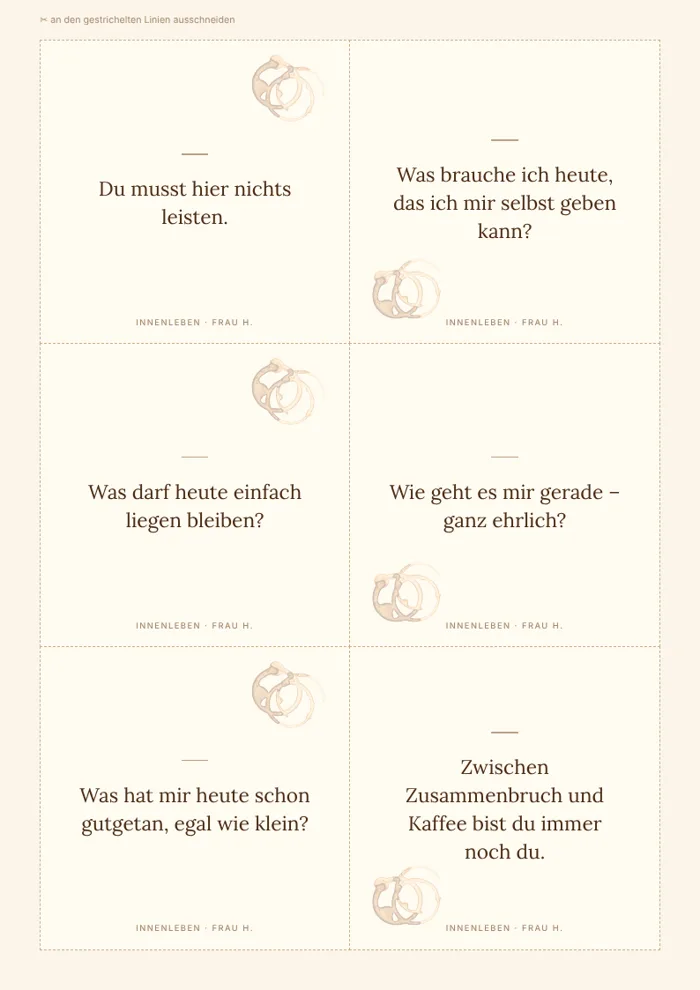
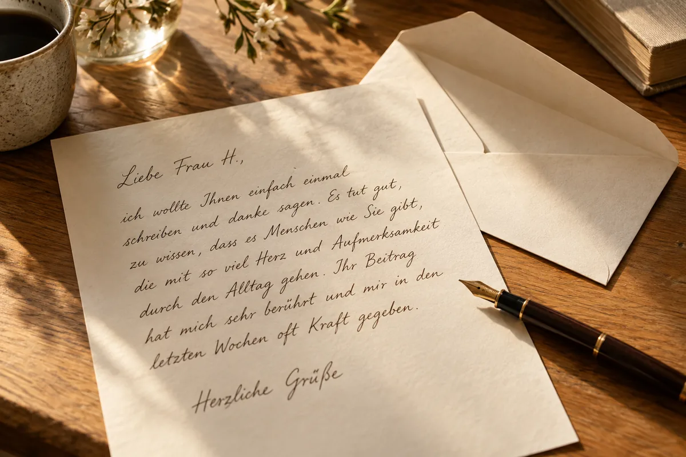

Innenleben zwischen Zusammenbruch und Kaffee
Workbooks
Vier Workbooks für die Momente, in denen es zu viel wird. Mit Leseprobe zum Reinblättern.
Zu den Workbooks
Workbooks, Songs und Geschichten zur Selbstfürsorge.
Nicht vom Fach. Von innen.
Ich wohne in Mihla. Von hier aus entsteht Innenleben – mit Workbooks, Songs und Geschichten zur Selbstfürsorge.
Ich bin keine Psychologin.
Ich habe nichts davon studiert.
Ich kenne es von innen.
Den Kopf, der nicht leiser wird.
Die Tage, an denen Funktionieren schon alles ist.
Das Gefühl, zu viel zu sein und gleichzeitig nicht genug.
Irgendwann habe ich angefangen, Seiten für mich selbst zu schreiben.
Seiten, die nichts von mir wollten.
Die nicht fragten, warum ich so bin,
sondern was gerade in mir los ist.
Daraus ist Innenleben geworden.
Workbooks, Songs, Geschichten.
Alles aus demselben Ort.
Wenn du dich hier wiederfindest: Du bist nicht falsch.
Und du bist nicht allein damit.
Und falls du dich fragst, was der Kaffee hier zu suchen hat:
Ich liebe ihn. Ich habe eigentlich immer einen in der Hand.
Egal wann. Egal warum.
Zwischen Zusammenbruch und Kaffee bist immer noch du.
Mit deinem Innenleben
Workbooks, Songs, Romane, Blog und dein Raum für eigene Gedanken.
Schau, was sich gerade passend anfühlt.
Innenleben zwischen Zusammenbruch und Kaffee
Vier Workbooks für die Momente, in denen es zu viel wird. Mit Leseprobe zum Reinblättern.
Innenleben zwischen laut und leise
Acht Songs von Frau H. Hör gleich in einen rein:
Innenleben zwischen alten Mustern und neuen Gedanken
Manchmal frage ich mich, wie viele Menschen gerade irgendwo sitzen und das Gefühl haben, unsichtbar zu sein.
Innenleben zwischen Zeilen und Wahrheit
Die erste Geschichte entsteht gerade. Sobald sie so weit ist, findest du hier einen Blick zwischen die Seiten.
Sag mir Bescheid, wenn es so weit istInnenleben zwischen Gedanken und Gefühlen
Ein Platz für deine Gedanken. Hier darfst du schreiben, was sonst keinen Platz findet – oder zeichnen, kritzeln und einfach alles rauslassen.
Kostenlos nutzbar. Ohne tägliches Muss.
Gedanken aufschreibenInnenleben zwischen Alltag und Durchatmen
Manchmal braucht der Kopf keine Antworten. Nur fünf Minuten Pause. Leg ein Puzzle, finde die Kaffee-Paare oder such das Chaos im Kreativzimmer.
Kostenlos. Ohne Anmeldung. Ohne Zeitdruck.
Eine kleine Auszeit nehmenZwei kleine Dinge, die du sofort nutzen kannst.
Wenn dein Kopf voll ist, musst du nicht sofort Ordnung schaffen. Schreib auf, was da ist – in 5, 10 oder 15 Minuten.
Alles bleibt in deinem Browser. Nichts wird gespeichert oder verschickt.
Zum Gedankensortierer
Sechs kleine Kärtchen zum Ausdrucken und Ausschneiden. Eine Karte zum Kaffee, ein Satz für dich.
Kärtchen herunterladenPDF, 2 Seiten, A4.
Für Neuigkeiten oder ein paar persönliche Worte.
Workshops in Mihla. Ich möchte Workshops rund um Selfcare und Mental Health anbieten. Termine, Ort und Anmeldung stehen noch nicht fest.
Romane. Die erste Geschichte entsteht gerade.

Du hast eine Frage zu Innenleben oder möchtest mir ein paar Worte schreiben? Ich freue mich auf deine Nachricht.